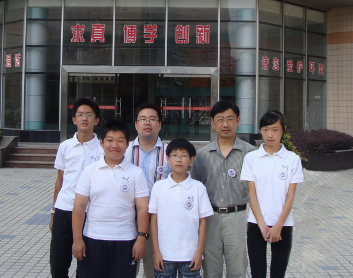

南通市港闸区五子棋小选手远征秦皇岛
#1 南通市港闸区五子棋小选手远征秦皇岛作者：有志青年 发表时间：2010-9-20 21:24:49
为进一步扩大港闸区五子棋运动项目的影响，提高小选手的运动成绩，南通市越江中学、港闸区实验小学和南通市唐闸小学三支代表队共计12名小选手一行将于9月21日凌晨4点从南通出发参加由国家体育总局棋牌运动管理中心主办，秦皇岛市体育局承办的“全国中小学五子棋校际交流活动”，此次比赛是继八月的全国青少年五子棋锦标赛后，我区选手的又一次集体亮相，比赛将于9月22日至9月24日期间在秦皇岛举行。愿小选手们在秦皇岛比赛期间，赛出风格、赛出水平，为学校争光。



［此帖子已被 有志青年 在 2010-9-20 21:25:16 编辑过］
#2 Re:南通市港闸区五子棋小选手远征秦皇岛作者：有志青年 发表时间：2010-9-21 2:17:09
起床了，准备出发#3 Re:南通市港闸区五子棋小选手远征秦皇岛作者：有志青年 发表时间：2010-9-21 7:49:32
已上从上海开往秦皇岛的和谐号动车，座位很宽松。12小时的行程，预计晚上8点半到秦皇岛，之后打车去赛场。预计晚上9点能到住地。#4 Re:南通市港闸区五子棋小选手远征秦皇岛作者：茗弈小刀 发表时间：2010-9-21 13:08:00
孩子们加油！你们是五子棋的希望！#5 Re:南通市港闸区五子棋小选手远征秦皇岛作者：孤竹 发表时间：2011-4-4 20:34:44
其实有志才是五子棋的希望，他是五子棋里的“钉子户”。现在爱五子棋网是网络五子棋的根据地。